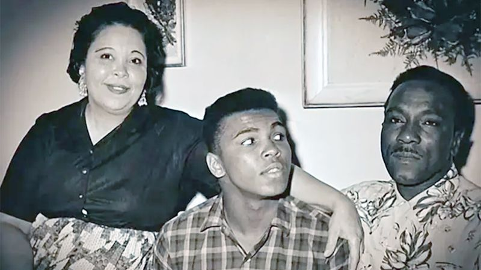
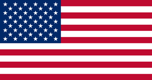

BOXING
История возникновения и развития бокса
История бокса насчитывает не одну тысячу лет. Разного рода упоминания о
кулачных боях встречаются в Египте (изображения на фресках), а также на минойских
и шумерских рельефах. По одним данным первые находки датированы 4000 лет до н.э.,
по другим 7000 лет до н.э. Принято считать, что спортивным видом единоборств бокс
стал в 688 году до н.э., после того как был включен в программу античных
Олимпийских игр. Родина современного бокса – Англия (начало XVII века).
Основателем и первым чемпионом по боксу принято считать Джеймса Фигга. Что интересно
до того как заняться боксом Джеймс был известным фехтовальщиком.
Позже он открыл академию бокса и начал обучать всех желающих искусству рукопашного
боя. Источник

Великий боксер родился 17 января 1942 года в Луисвилле, штат Кентукки,
США. Его родители, Одесса и Кассиус Клей, были представителями темнокожего
среднего класса. Мать убирала и готовила в домах обеспеченных белых семей,
а отец, будучи талантливым художником, рисовал рекламные вывески и плакаты.
Родители накопили 4,5 тысячи долларов и приобрели коттедж в хорошем
районе для афроамериканцев.
При рождении Мухаммед Али получил
имя Кассиус Клей-младший.
Предки отца, который считал себя потомком известного либерального политика
Генри Клея, были освобождены от рабства плантатором и политиком Кассиусом
Марселлусом Клеем. Спустя два года после
рождения Кассиуса-младшего на свет появился его брат Рудольф Клей, который
в будущем возьмет себе имя Рахман Али.

